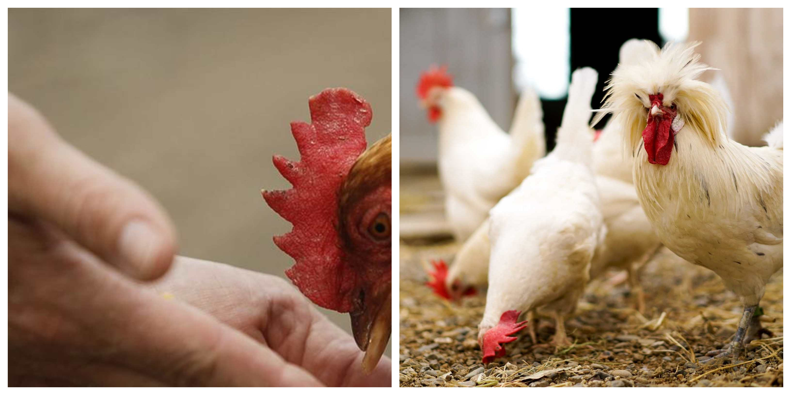

Do chickens ever attack humans?.

Yes, chickens do attack humans. They however attack for many different reasons. The question most people ask is whether or not the attack is dangerous. The answer to that is a bit more
complicated. When chickens attack humans, there might be many different scratches, some of which can be very nasty. There might also be the possible chance of damage to the eyes even though that
is rare.
Yes, Chickens do Attack Humans
Chickens are not known to be predatory animals, and they are known to mostly get along quite fine with humans on a whole. Some chicken owners have even stated that they get genuine love and affection from their pet chicken.
However, one should note that these animals are not completely passive, they have been known to attack humans. Roosters are more likely to attack as they are the ones who are tasked with protecting other members of their flock from intruders. This means that if any chickens should attack, it would more likely be a rooster.
Story from someone attacked by chickens
Story by Minh Tran on QuoraThis is really difficult for me to relive. But for the sake of others and in the hope of preventing anyone else from experiencing this horror, I know I must tell my story. On this eventful day, it started out like any other saturday. Clear blue skies, birds singing and the wonderful feeling from knowing that I had the luxury of a whole day of nothingness to enjoy. I was happy, unaware of the horror that was to unfold. I decided to check on our pet chickens, Jack, Jill, Jack junior and little Jill. I should have suspected something was up, I had noticed them spending more and more time together. Heads together, pecking together and eating together. On this particular day, they had each looked up to eyeball me with their beady eyes as I entered their pen. Their territory. They looked as evil as chickens can possibly look evil. But I didn't think much of it. Thought it was cute actually. So I carried on cleaning out their pen and refilling their water. As soon as I turned my back and had squatted to reach their water bowl, the loud wing flapping began. I looked around in alarm as Jack and Jill climbed up a hill to attack my face. I fell over backwards and that is when the rest of the family joined in on the pecking frenzy. I swung around wildly with no success so I cried out for help. As if on cue, the evil chickens quickly waddled out the pen into the open and into freedom. That is my last memory of them, their chicken butts waddling quickly as if to mock me while I lay on my back helpless. Ok so maybe that's not really happened but if I had to part with any advice it would be to never step on a chicken because they will peck you in self defense and if you are unlucky, their friends will join in too.
Question 2: What does a dog's vision look like?
A dogs' vision is comprised of mainly yellow-bluish receptors. Say for instance we show a dog a picture of a rose with trees in the background, that dog will see that picture as mainly yellow and light green.
Question 3: What color do dogs see best?
It is impossible to tell 100 percent which colors dogs see best but studies have shown that dogs see blue and yellow best.
Question 4: Can dogs see in the dark?
I wouldn't go as far as to say that dogs can see in the dark. However, they are way more able to navigate in low light areas than humans.